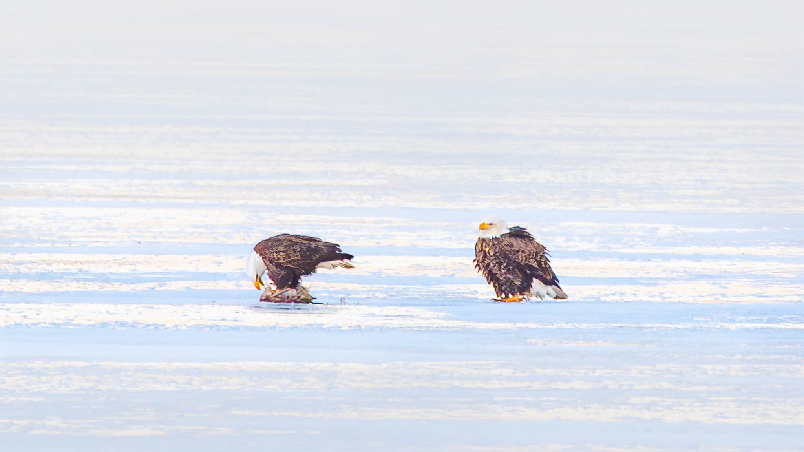
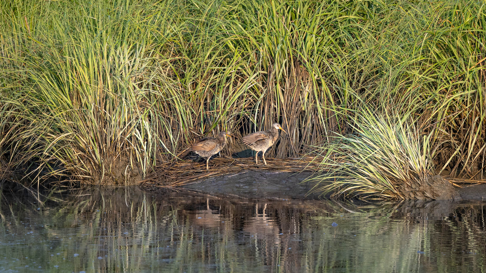
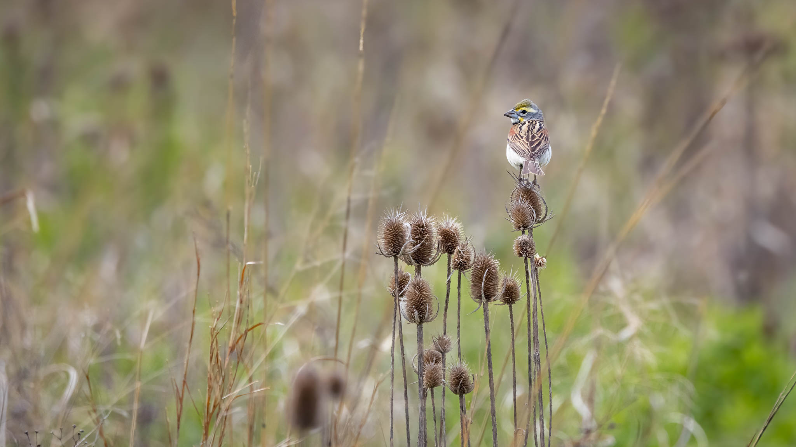
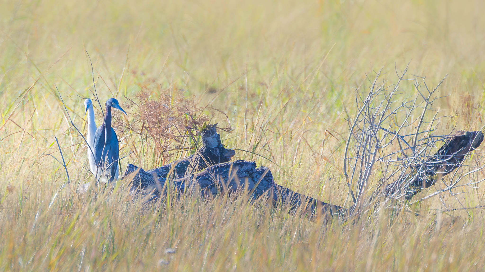
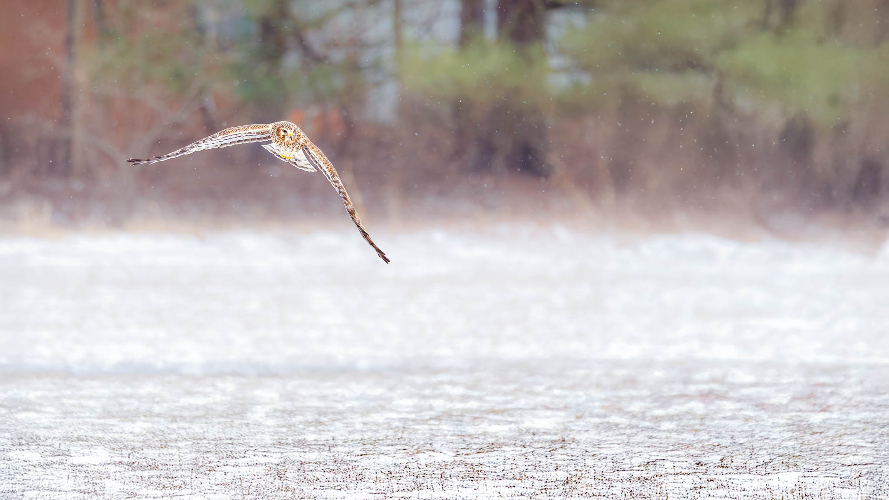
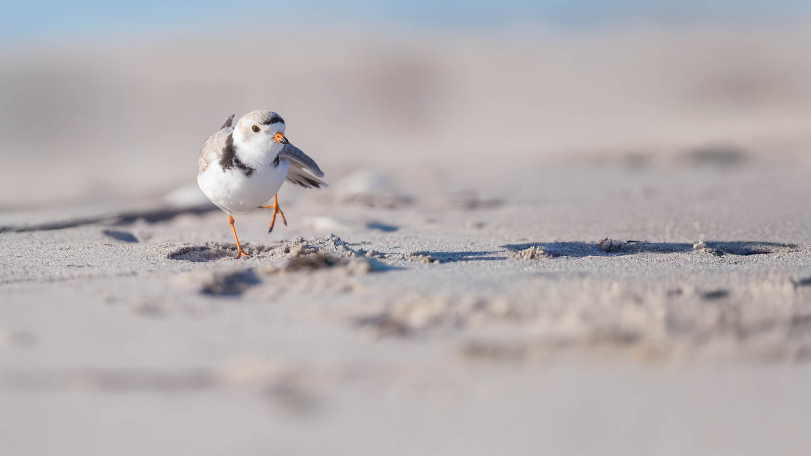
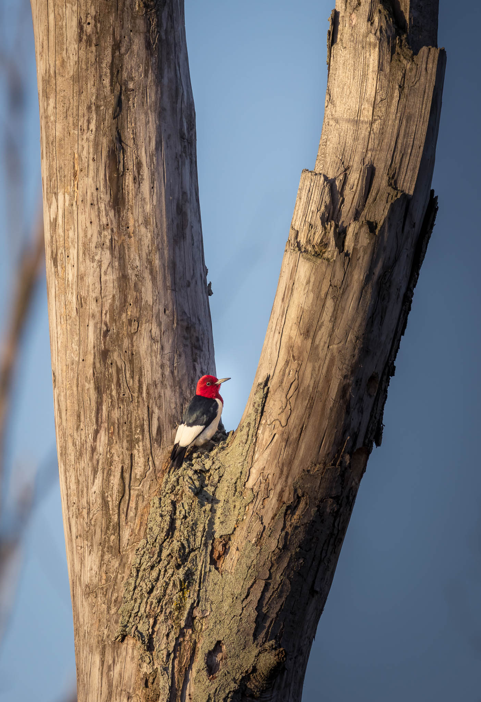

These images place birds within the larger world they inhabit, allowing the landscape, light, and season to share the story. By keeping the bird smaller in the frame, the focus shifts from identification alone to context—frozen lakes, windswept fields, quiet marshes, and open skies. This approach emphasizes scale, mood, and environment, creating a more immersive experience for the viewer. Rather than isolating the subject, these photographs invite you to slow down and see the bird as part of a living place, shaped by weather, habitat, and time.

American Goldfinch
Leaser Lake
Hanging On

American Herring Gull
Sunrise
Reflection

American Oystercatcher
Barnegat State Park
Over the Dune

American Robin
Leaser Lake
Spring Emergence

Bald Eagles
Rose Valley Lake
One Feeds, One Waits on the Frozen Lake

Black-and-white Warbler
PA State Gamelands
Black and White Singer

Brant
Barnegat Lighthouse State Park
Between Land and Sea

Clapper Rail
Forsythe Wildlife Preserve
Marsh Passage

Common Raven
Acadia National Park
On the Edge of the Fog

Dark-eyed Junco
Leaser Lake
Evergreen Pause

Dickcissel
Northern Ohio Grassland
Above the Meadow

Eastern Meadowlark
Amish Pond
Morning Watch

Great Egret
Rio Grande River
Still Watch

Horned Lark
Luzerne County Farm
Winter Survival

Indigo Bunting
Leaser Lake
Unassuming Beauty

Least Tern
Barnegat Lighthouse State Park
First Catch

Little Blue Heron
Rio Grande Valley
Afternoon Pause

Northern Harrier
Susquehanna Riverlands
Hunter in the Snow

Northern House Wren
Leaser Lake
Rooftop Perch

Orchard Oriole
Leaser Lake
Hidden in Green

Piping Plover
Barnegat Lighthouse State Park
In Pursuit

Prairie Warbler
Beltzville State Park
Among the Blossoms

Red-headed Woodpecker
Magee Marsh
Between the Trunks

Red-winged Blackbird
Amish Pond
Marsh Sentinel

Red-winged Blackbird
Amish Pond
Balancing Act

Short-eared Owl
Rodino Farm
Hidden Hunter

Snow Buntings
Plymouth Flats
Winter Perch

Spotted Sandpiper
Leaser Lake
Low in the Grass

Spotted Sandpiper
Susquehanna Wetlands
Log Lookout

Swamp Sparrow
Leaser Lake
Picking at the Cattails

Western Cattle Egret
Rio Grande River
An Unlikely Trio

White-throated Sparrow
Susquehanna Wetlands
Among the Winterberries

Wood Ducks
Forsythe Wildlife Preserve
Through the Reeds

Yellow-rumped Warbler
Leaser Lake
Hidden in the Pines